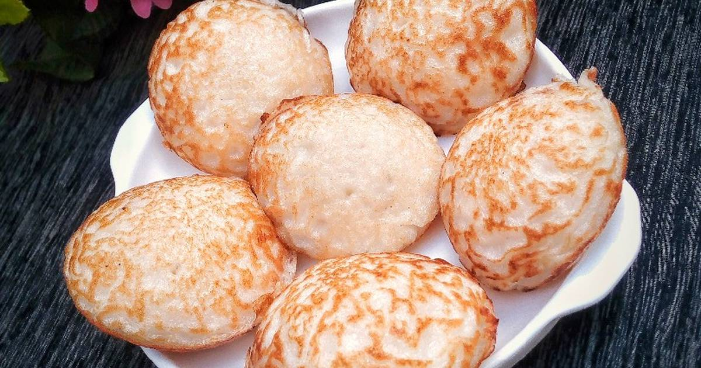
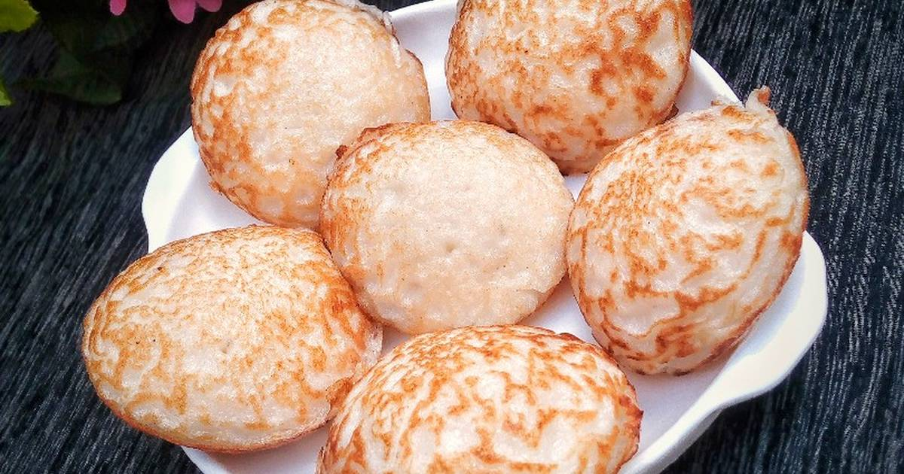

YUMYUM |
 |
WAINA |
 | WAINA |
|---|
Masa is a northern staple similar to a pan fried rice cake, the recipes vary a little across households but the basic premise never changes. Traditionally Masa is made into an oval shape. You can experiment with some onions and ginger in your masa
The Nigerian Northerners are known for their healthy and delicious meals and I was not too surprised the very first time I ate Masa. It tastes so delicious and my family could not have enough of it. You definitely need to give this a try.
| Ingredients | Measurements |
|---|---|
| Raw rice | 1.5 cups |
| Cooked rice | 1.5 tablespoons |
| Active dry yeast | 1.5 tablespoons |
| Sugar | 4 tablespoons |
| Water at room temperature | 2 cups |
| Groud akaun (cooking potash) |
1/4 tablespoon |
| Salt | 1/2 tablespoon |
YUMYUM |
|
WAINA |
 | WAINA |
|---|